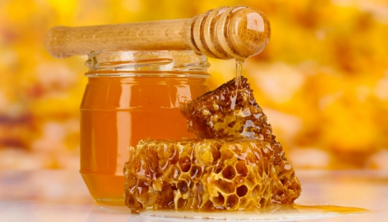
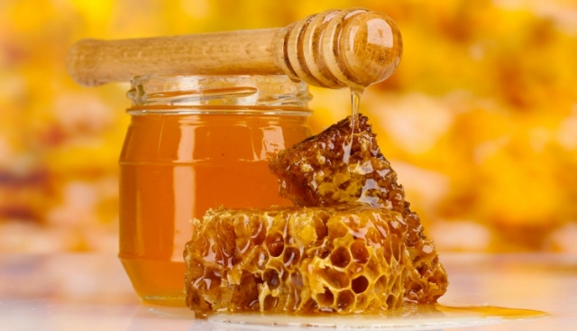

Curiosidades
Nomes populares: Jatai, essa abelha também é conhecida como Jataí-amarela ou Abelha-ouro em
algumas regions
O mel da Jataí, além de saboroso e suave, é bastante procurado por suas propriedades medicinais. É usado como fortificante e anti-inflamatório,
em particular dos olhos. Além do mel, a Jataí produz própolis, cera e pólen de boa qualidade. Em comparação com as abelhas com ferrão, produz menor quantidade,
mas o preço de venda é bem maior:
um litro desse mel pode chegar a 100 reais.
 
